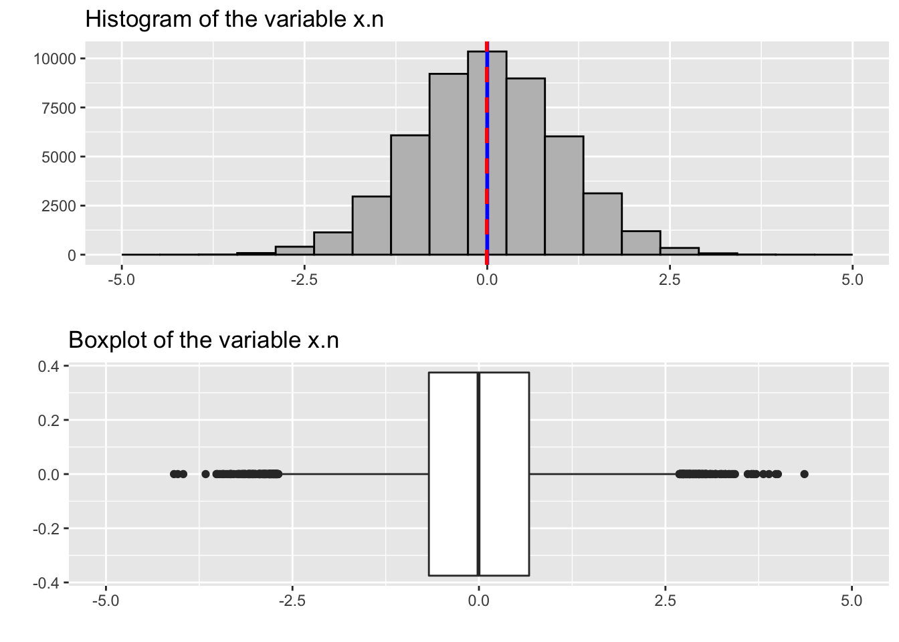
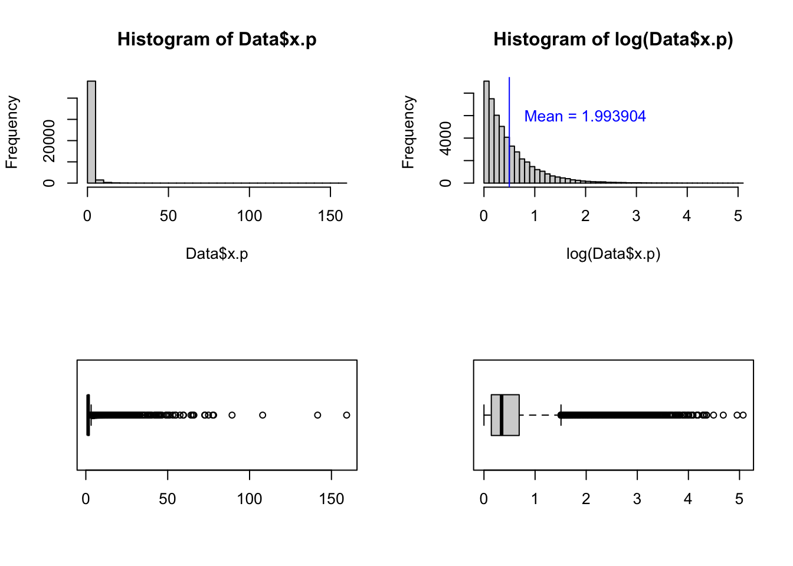

set.seed(100)
Data=data.frame(x.n=rnorm(50000),x.p=rPareto(50000,t=1,alpha=2))
summary(Data)## x.n x.p
## Min. :-4.087893 Min. : 1.000
## 1st Qu.:-0.671144 1st Qu.: 1.154
## Median :-0.005919 Median : 1.412
## Mean :-0.000208 Mean : 1.994
## 3rd Qu.: 0.672466 3rd Qu.: 1.992
## Max. : 4.363243 Max. :159.275P = ggplot(data = Data, mapping = (aes(x.n)))
p1 = P + geom_histogram(bins=20, color="black",fill="grey") +
geom_vline(aes(xintercept=mean(x.n)),
color="blue", size=1) +
geom_vline(aes(xintercept=median(x.n)),
color="red", linetype="dashed", size=1)
p2 = P + geom_boxplot()
grid.arrange(p1, p2, nrow = 2)
describe(Data$x.n)## Data$x.n
## n missing distinct Info Mean Gmd .05
## 50000 0 50000 1 -0.0002085 1.127 -1.635097
## .10 .25 .50 .75 .90 .95
## -1.272684 -0.671144 -0.005919 0.672466 1.285326 1.653768
##
## lowest : -4.087893 -4.036810 -3.964171 -3.663576 -3.518848
## highest: 3.813002 3.888043 3.979364 4.007258 4.363243sd(Data$x.n)## [1] 0.9989658Since the data is generated using ‘rnorm’ function with a mean 0 and standard deviation 1. We would expect a mean around 0 and a standard deviation around 1.
The mean defines the location of the peak for the normal distribution. Most values cluster around the mean.
Standard deviation measures the spread of a data distribution. It measures the typical distance between each data point and the mean.
For a normal distribution, 68% of the observations are within +/- one standard deviation of the mean, 95% are within +/- two standard deviations, and 99.7% are within +- three standard deviations.
Tip: Start by determining the mean and standard deviation of the data set. Make a histogram and boxplot. You can use the function filter to determine a subset of a data frame.
describe(Data$x.p)## Data$x.p
## n missing distinct Info Mean Gmd .05 .10
## 50000 0 50000 1 1.994 1.324 1.025 1.053
## .25 .50 .75 .90 .95
## 1.154 1.412 1.992 3.159 4.474
##
## lowest : 1.000006 1.000021 1.000028 1.000029 1.000036
## highest: 78.040839 89.300194 107.986396 141.555021 159.274526par(mfrow=c(2,2))
hist(Data$x.p,50)
hist(log(Data$x.p),50)
mean(Data$x.p)## [1] 1.993904sd(Data$x.p)## [1] 2.601173abline(v = mean(log(Data$x.p)), col = "blue")
text(2,6000, "Mean = 1.993904", col = "blue")
?abline
boxplot(Data$x.p, horizontal=TRUE, range=1.5)
boxplot(log(Data$x.p), horizontal=TRUE, range=1.5)
The variable \(x.p\) has a large tail on the right and has many outliers with some very extreme values. Since the mean and the standard deviation are senstive to outliers are they less informative for skewed variables like \(x.p\).
summary(Data$x.p)## Min. 1st Qu. Median Mean 3rd Qu. Max.
## 1.000 1.154 1.412 1.994 1.992 159.275